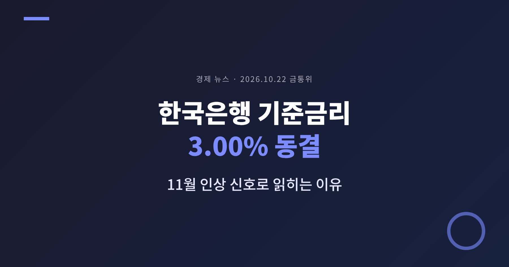
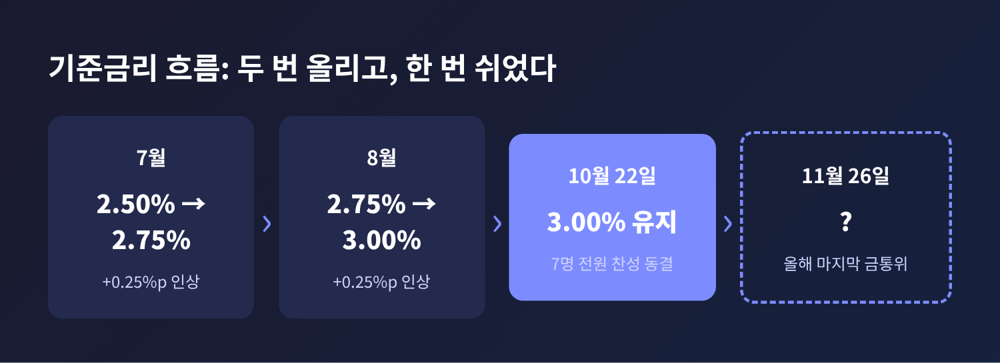
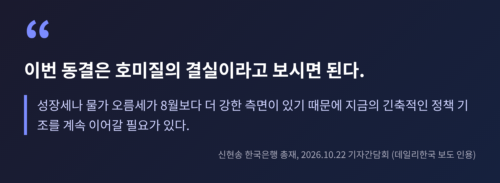
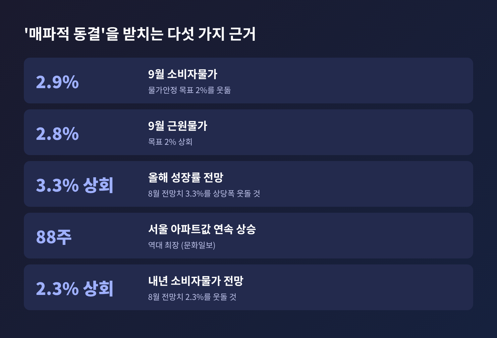
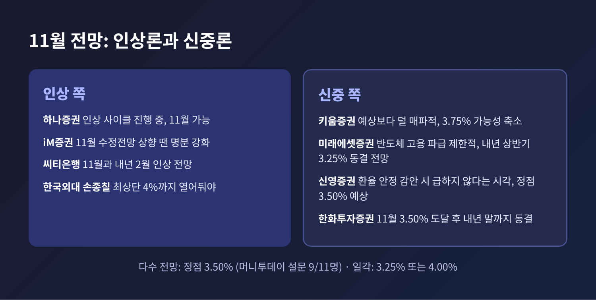
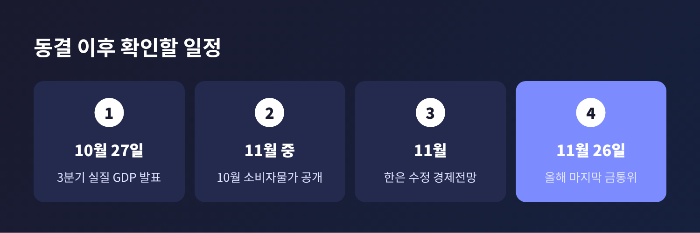

3줄 요약
한국은행 기준금리 3.00% 동결이 어떤 의미인지, 왜 인상 신호로 해석되는지 정리해 보겠습니다. 결정문과 총재 기자간담회 발언, 복수 매체 보도를 교차 확인해 썼습니다.
2026년 10월 22일 목요일, 금융통화위원회가 기준금리를 연 3.00%로 유지하기로 했습니다. 7명 전원이 동결에 찬성했고, 인상을 주장한 소수의견은 없었습니다.
흐름을 짚어 보겠습니다. 한국은행은 7월에 2.50%에서 2.75%로, 8월에 다시 0.25%포인트를 올려 3.00%에 이르렀습니다. 두 달 연속 인상으로 모두 0.50%포인트를 높인 셈입니다. 이번 동결은 그 뒤에 처음 나온 숨 고르기입니다. 서울신문은 신현송 총재 취임 후 첫 동결이라고 전했습니다.

결정문의 핵심 문장은 이렇습니다. 향후 통화정책은 "물가·경기 흐름 및 금융안정 상황을 면밀히 점검하면서 추가 인상의 시기와 속도 등을 결정해 나갈 것"이라고 했습니다(아시아경제 인용). 동결은 했지만 '인상'이라는 단어는 결정문에서 지워지지 않았습니다.
금리를 올리지 않았는데 왜 인상 신호라고 할까요. 이유는 총재의 설명에 있습니다.
신 총재는 이번 동결을 "호미질의 결실"이라고 불렀습니다. 8월 회의에서 자신이 "가래로 막아야 할 것을 호미로 막은 것"이라고 한 표현을 이어받은 말입니다. 7월과 8월에 연이어 올려 둔 덕분에 정책 여력을 확보했고, 그래서 지금은 지켜볼 시간이 생겼다는 뜻입니다.

그러면서 선을 그었습니다. 성장세와 물가 오름세가 8월보다 더 강하기 때문에 긴축 기조를 이어갈 필요가 있다고 했습니다. 물가가 목표 수준으로 안정적으로 수렴한다는 확신이 들 때까지 계속 대응하겠다는 말도 덧붙였습니다. 만장일치라고 해서 인상 필요성이 줄어든 것은 아니라는 취지입니다.
판단의 시점도 구체적으로 제시했습니다. 10월 27일 발표되는 3분기 실질 GDP와 이후 공개되는 10월 소비자물가를 확인한 뒤 결정해도 늦지 않다는 것입니다. 사실상 두 지표가 11월 결정의 관문이 되는 셈입니다.

총재의 말에는 근거가 되는 수치가 있습니다.
물가입니다. 9월 소비자물가는 1년 전보다 2.9% 올랐고, 근원물가는 2.8%였습니다. 물가안정 목표 2%를 모두 웃돕니다. 문화일보에 따르면 석유류 가격은 14.8% 올라 두 달 연속 14%대 상승을 이어갔습니다. 한은은 내년 소비자물가와 근원물가 상승률이 8월 전망치인 2.3%와 2.5%를 웃돌 것으로 예상했습니다. MTN은 두바이유가 중동 긴장 속에 배럴당 100달러를 넘었다고 전했습니다.
성장입니다. 한은은 올해와 내년 성장률이 8월 전망치인 3.3%, 2.9%를 상당폭 웃돌 것으로 봤습니다. 반도체 경기 호조에 따른 수출과 투자 증가, 그리고 소비 회복이 이유로 제시됐습니다. 정부도 올해 성장률이 최고 3.6%까지 가능하다는 입장을 밝혔습니다. 경기가 뜨거우면 물가 압력도 함께 커지기 마련입니다. 성장률 상향이 인상 논리를 받치는 이유입니다.
환율입니다. 동결을 가능하게 한 요인이 여기에 있습니다. 서울신문에 따르면 이날 원·달러 환율은 오후 3시 30분 기준 1,324.2원이었고, 장중 한때 1,322.7원까지 내려가 연저점을 새로 썼습니다. 원화 약세가 수입물가를 밀어 올리는 압력이 한결 누그러진 것입니다. 9월 미국 연방준비제도의 금리 인상에도 국내 금융시장이 비교적 안정적이었다는 점도 총재가 꼽았습니다.
예전에는 환율이 한은의 발목을 잡았습니다. 지금은 환율 안정이 한 박자 쉬어갈 여지를 줬습니다. 다만 총재는 원화 가치가 과거보다 여전히 낮다고 진단했습니다. 안심할 단계는 아니라는 이야기입니다.
금융안정 변수도 있습니다. 전 금융권 가계대출은 기타대출이 줄면서 감소했지만, 주택 관련 대출은 증가세가 이어지고 있습니다. 서울과 경기 일부에서는 주택가격 상승폭이 다시 확대되는 모습입니다.
문화일보는 서울 아파트값이 10월 둘째 주 주간 0.16% 올라 88주 연속 상승했고, 이는 역대 최장이라고 전했습니다. 아시아경제는 같은 흐름 속에서도 강남 3구는 하락하고 외곽과 경기 남부가 오르는 양상이라고 설명했습니다. 총재는 주택가격 상승 속도와 금융취약성지수가 완화됐다고 평가했지만, 추가 인상 시기와 속도를 정할 때 주택시장과 가계부채를 함께 보겠다고 했습니다.
여기에 재정 문제가 얹혔습니다. 총재는 확장재정이 물가를 자극하고 금리 인상의 효과를 약하게 만들 수 있다고 경고했습니다. 연금이나 보조금처럼 한번 늘리면 되돌리기 어려운 지출은 신중해야 한다는 지적입니다. 내년 예산안에 가계·기업 지원금 같은 이전 지출이 상당 부분 담겼다는 점을 겨냥한 발언으로 읽힙니다.
시장의 큰 줄기는 11월 인상입니다. 머니투데이가 결정 전에 이코노미스트 11명을 조사했더니 8명이 11월 3.25% 인상을, 9명이 정점 금리 3.50%를 예상했습니다. 결정 이후 이투데이가 정리한 전문가 반응도 11월 인상에 대체로 이견이 없었고, 다음 인상은 내년 2월이 다수였으며, 최종금리는 3.50%가 우세했습니다.

다만 시각은 하나가 아닙니다. 정리하면 이렇습니다.
전문가 전망은 어디까지나 전망입니다. 총재 본인도 터미널 레이트에 대해서는 채권시장의 금리 추정을 참고할 뿐 구속되지는 않는다고 했습니다. 11월 26일 회의에 앞서 10월 27일 3분기 GDP, 11월 공개되는 10월 소비자물가, 그리고 11월 수정 경제전망이 줄줄이 나옵니다. 숫자가 예상과 다르게 나오면 그림은 달라질 수 있습니다.

대출을 가진 분이라면 변동금리 대출의 이자 부담이 당장 더 늘지는 않는다는 점은 다행입니다. 하지만 11월에 인상이 이뤄진다면 이야기가 달라집니다. 예금 쪽으로 보면 금리가 높게 유지되는 기간이 길어질 수 있다는 신호이기도 합니다. 집값이 계속 오르는 상황에서 금리까지 오르면 주택 관련 대출을 둔 가계의 부담은 이중으로 커집니다.
한계도 분명합니다. 이번 글은 보도된 수치와 발언을 중심으로 정리했고, 결정문 전문과 기자간담회 전문을 직접 확인한 것은 아닙니다. 정확한 문구는 한국은행 공식 자료에서 다시 확인하시길 권합니다.
정리하면 이렇습니다. 이번 결정은 '멈춤'이 아니라 '확인'에 가깝습니다.
"동결은 호미질의 결실이지, 긴축의 끝은 아니다."
3.00%라는 숫자는 그대로입니다. 그러나 이 숫자가 다음 달에도 같을지는 물가와 성장, 환율이 정할 것입니다. 11월 26일 회의에서 총재의 '호미'가 다시 쓰이게 될지 지켜보실 만합니다.
※ 본 글은 뉴스 해설을 위한 정보 제공 목적이며 투자 권유가 아닙니다. 금리·환율·부동산 관련 판단과 그에 따른 결과는 본인의 책임이며, 최종 결정 전 공식 자료와 전문가 상담을 거치시길 권합니다.
출처: 뉴스1, 아시아경제, 뉴스핌, 문화일보, MTN, 서울신문, 한국아이닷컴(데일리한국), 이투데이, 머니투데이, 인싸잇(미디어워치) 2026.10.22 보도 종합